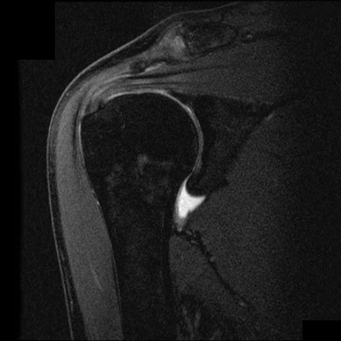

Ficha del catálogo
Rotura del manguito rotador
- Sistema
- Óseo
- Modalidad
- RM
- Región
- Hombro
- Dificultad
- Intermedio
La degeneración y rotura de los tendones del manguito rotador, sobre todo del supraespinoso, es una causa muy frecuente de dolor de hombro en adultos de mediana edad y ancianos. Puede ser degenerativa por pinzamiento crónico o traumática en pacientes jóvenes. El grado de retracción y la atrofia muscular determinan si la reparación es posible.
Técnica
Resonancia magnética de hombro en los tres planos con secuencias sensibles al líquido. El ultrasonido dinámico es una alternativa accesible en manos entrenadas.
Qué observar
- Discontinuidad de las fibras tendinosas con líquido interpuesto
- Hiperseñal focal en el espesor tendinoso, propia de la rotura parcial
- Retracción del extremo tendinoso hacia medial y grado de separación
- Atrofia e infiltración grasa del vientre muscular en el plano sagital
- Ascenso de la cabeza humeral con reducción del espacio subacromial en radiografía
- Líquido en la bolsa subacromiodeltoidea comunicado con la articulación
Hallazgos
Solución de continuidad tendinosa con líquido interpuesto, retracción variable del muñón y cambios de atrofia grasa del músculo correspondiente.
Perlas
La infiltración grasa del músculo es irreversible y es el mejor predictor del resultado quirúrgico. Por eso el informe debe incluir siempre el grado de atrofia y no solo el tamaño de la rotura.
Diagnóstico diferencial
- Tendinopatía sin rotura
- Engrosamiento y señal intermedia sin líquido que atraviese el tendón.
- Capsulitis adhesiva
- Engrosamiento capsular en el intervalo rotador con tendones íntegros.
- Artrosis acromioclavicular
- Dolor selectivo en la articulación con cambios degenerativos locales.
Simuladores
- Ángulo mágico en tendones oblicuos
- Vasos y grasa entre haces tendinosos
- Bursitis aislada
Por modalidad
- RM
- Técnica de referencia para tendones y músculo
- US
- Exploración dinámica, económica y comparativa
- RX
- Muestra el ascenso humeral y la degeneración crónica
Protocolo
Resonancia en planos oblicuo coronal, oblicuo sagital y axial con secuencias sensibles al líquido. Artrorresonancia si se sospecha rotura parcial articular o lesión labral.
Clasificación
Las roturas se describen como parciales, articulares o bursales, y completas, con medición del tamaño y de la retracción del muñón tendinoso.
Errores frecuentes
- Confundir tendinopatía degenerativa con rotura completa
- No informar la atrofia muscular en el plano sagital
- Atribuir todo el dolor al manguito sin valorar la articulación acromioclavicular

manguito rotador supraespinoso hombro rotura tendinosa atrofia grasa pinzamiento